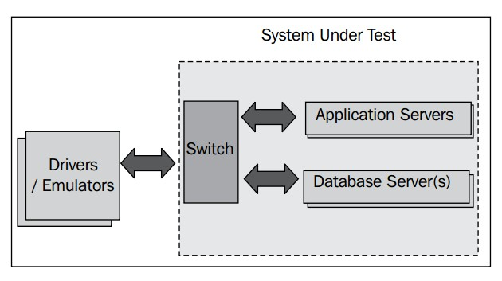

5.4 工业级基准测试
这些年来，工业界与学术界一直在努力在基准测试中模拟出Java应用程序可能会遇到的各种问题，对此，JVM厂商和硬件厂商当然是举双手欢迎，因为这不但可以提升JVM的运行效率，还有利于产品推广，标准化的基准测试通常会设计出与JVM调优相关的一些细节。为了能够更好的理解在不同的场景下应如何使用JVM，建议开发人员查看一下针对相关问题的基准测试报告。
自然地，基准测试的对象延展到了与编程相关的方方面面，很多软件栈都旨在提供标准化性能测量，测量对象无所不包，从应用程序服务器到网络库等等。对于Java开发人员来说，选择并使用相关的基准测试也算是一种修炼了。
本节会以JVM位中心对基准测试进行介绍。了解如何JVM，以及如何做相关配置是很有意思的，所以本节中选用JVM厂商常用的几种基准测试套件做重点介绍。在之前的章节中已经介绍了优化JVM对不同类型应用程序的影响，良好的基准测试可以准确反映出应用程序在实际运行时的执行性能，
本节所提到的一些基准测试套件，例如SPECjAppServer，同样可以作为通用基准测试应用于更大型的软件栈。
5.4.1 SPEC基准测试套件
**SPEC（Standard Performance Evaluation Corporation）**是一个非盈利性组织，其开发并维护着可用于对运行在现代硬件架构上的各类应用程序进行性能测试的多种基准测试套件。本节将对其中与Java相关的几种基准测试套件进行介绍。
{kind=link}
除了本节中提到的几种SPEC基准测试套件和SPECjvm2008套件之外，其他的SPEC基准测试套件都是需要付费的。
5.4.1.1 SPECjvm基准测试套件
SPECjvm的第一个发行版是1998年的SPECjvm98，其设计初衷是测量JVM和JRE的执行性能，目前该版本已经下线。SPECjvm98是一个单线程的、绑定CPU的基准测试套件，它确实可以从某个侧面反映出JVM代码优化的质量，但也仅仅就这些了。几年之后，SPECjvm98就因其过小的工作对象集合（object working set）而再也无法承担起对现代JVM进行基准测试的任务了。SPECjvm98套件中包含了一些简单的测试用例，例如压缩、MP3解码，以及对javac编译器的性能测试等。
译者注：猜测，这里的"object working sets"应该是指SPECjvm98的测试数据或工作负载。
SPECjvm目前的版本是SPECjvm2008，是SPECjvm98的改进版，在其基础上添加了一些新的基准测试用例，增大了工作负载，并且可应用于多核平台。此外，它还可以对JVM的一些内容指标进行测试，例如JVM启动时间和锁的执行性能。
近来，为了更好的进行测试，SPEC组织又在SPECjvm中添加了一些新的应用程序，例如对Derby数据库和加密框架的支持，此外，还对应用程序热身和在稳定状态下测试性能做了很多改进。
久负盛名的科学计算基准测试套件SciMark已被集成到SPECjvm2008中。在之前单独发行的SciMark套件中，由于并非所有JVM实现都支持OSR，所以不同JVM之间的测试结果不具可比性。这个问题在SPECjvm2008已经得以解决。
译者注，有关OSR的问题请参见2.6.3.4节。
5.4.1.2 SPECjAppServer套件/SPECjEnterprise2010套件
SPECjAppServer是一个相当复杂的基准测试套件，安装也起来也很麻烦，但同时，它也是非常出色的。它的前身是ECPerf，经过SPECjAppServer2001、SPECjAppServer2002和SPECjAppServer2004这几个版本的发展，其最新版本已更名为SPECjEnterprise2010。
该基准测试套件的基本思想是尽可能多的软硬件平台上运行一个典型的J2EE应用程序，该J2EE应用程序会模拟汽车经销商与生产商之间的交互，以Web浏览器模拟经销商与生产商之间的对话，库存和交易数据保存在数据库中，生产过程用RMI操作来模拟。此外，SPECjEnterprise2010还在基准测试中引入了Web Service和其他一些Java EE 5.0版本中的功能。
SPECjAppServer套件不仅仅可用来对JVM进行基准测试，还可以对很多方面进行性能测试，例如服务器硬件、网络交换机和某个具体的应用程序服务器等等，其会在给出测试分数时提供完整软硬件调用栈信息。就基准测试套件来说，SPECjAppServer/SPECjEnterprise2010非常出色，可以对系统的每一个部分进行性能测试，这对每个开发者来都是具有重要意义的。值得注意的是，基准测试的目标对象是J2EE应用程序的中间层，而不是数据库层或数据生成层。
该基准测试套件安装复杂（不过理论上只需要安装一次），难以调试，可以在单台机器上以自包含（self-contained）的形式运行，但这么干有点浪费资源，而且所得到的结果也不具说服力。
一般情况下，基准测试需要有一个包含了网络架构、应用程序服务器和数据库服务器等组件的 **待测试系统（System Under Test）**，这些组件分别会位于不同的物理机器上，然后通过位于测试系统外部的驱动器（driver）来添加工作负载。本章前面部分介绍的示例就是以这种方式工作的。相比于之前的版本，SPECjEnterprise2010套件的一大改进就是大幅降低了数据库负载所带来的影响，以便更准确的测出其他部分的性能指数。
在完整的测试环境中，每一个部分的性能对测试结果有很重要，从网络交换机到RAID方案等等等等。对于JVM性能测试来说，SPECjAppServer是非常出色的基准测试套件，它涵盖了大量的Java代码，可以跟踪调用栈执行代码分析，而不会产生额外的"热方法"，在这里为了能让JIT编译器准确的完成内联操作，SPECjAppServer对其做了细致的设定。

就SPECjAppServer2004来说，为了能够成功运行基准测试，使用 TxRate（transaction rate）来表示测试过程中可承载的工作量，该数值随测试过程中工作负载的增加而增加，当基准测试程序因工作负载过大而以失败告终时，即可确定出TxRate的最大值，该值可用于计算基准测试的最终得分。
新进版本的基准测试套件做了很多改进，应用程序服务器使用了更新的标准，为适应新的硬件架构而增加了工作负载，提供了对多应用程序和多驱动器（multiple driver machines）的支持，性能测试也更加准确。
5.4.1.3 SPECjbb套件
SPECjbb可能是现今使用最广泛的Java基准测试之一，它应用了最新的学术研究成果，并且已经成为三大虚拟机厂商（Oracle，IBM和Sun）一个竞争点，而这三位还与硬件厂商密切合作，轮流刷新着世界纪录。
SPECjbb目前已发展出了2个版本，分别是SPECjbb2000（目前以退役）和SPECjbb2005（仍在使用）。与SPECjAppServer类似，SPECjbb也是从多个层次来模拟事务处理流程，但只通过一个自包含的、运行在一台物理服务器上的应用程序来执行。
SPECjbb基准测试套件对JVM的性能优化做出了很多贡献，尤其是在代码生成方面，产出了很多成果，此外，SPECjbb打分系统对垃圾回收和锁性能方面的要求也间接的推动了这些方面的技术进步。
下面是JRockit JVM中直接影响SPECjbb基准测试得分的几个功能点和优化点（实际上还有一些会影响到系统性能的因素）：
- 延迟解锁（偏向锁）
- 对象预抓取算法
- 对大内存页的支持
- 对非连续堆的支持
- 对数组操作的优化，例如对
System.arraycopy方法的具体实现、内存分配时清零、数组赋值等几个方面的优化- 对逃逸分析的支持
SPECjbb的一个缺点是硬件依赖性过于严重，受内存限制较大，单单是把运行环境切换到L2缓存稍大的硬件上就会使执行性能大幅提升。
SPECjbb的另一个缺点是测试过程有可能只关注了吞吐量这一方面。在SPECjbb基准测试中，如果偶尔暂停了应用程序的执行，则会开始执行并行垃圾回收，直到清理完整个堆，而这样却会在测试中得到较高的分数。
SPECjbb2005还可作为SPECpower_ssj2008基准测试的简化版使用，它们使用相同的事务处理代码，区别在于SPECpower_ssj2008使用了外部的驱动器来执行。SPECjbb2005可以量化表示在不同的系统负载下，每瓦特电力所能完成的事物数，算是对电力消耗的简单测试。
这里说说关于基准测试的趣事，有时候，性能优化仅仅是为了讨基准测试的欢心。例如，在JRockit中，
System.currentTimeMillis方法是一个本地方法，调用该方法会返回子970年1月1日以来的毫秒数。由于这个方法涉及到操作系统层面的[系统调用][]或特权操作，因此，频繁调用该方法反而会降低应用程序性能。可事实上，在SPCjbb2000基准测试中包含不少对
System.currentTimeMillis方法的调用。在某些操作系统中（例如Windows和Solaris），可以有其他的方法快速获取系统时间，但在Linux上却没有这样的方法，在Linux上，JRockit自己维护了一个基于信号机制的计时器，使用专门的线程来捕获操作系统每隔10毫秒产生一次的信号，当捕获到信号后，就将本地的时间计数器增加10毫秒。这种实现方式使计时器准确性逊于系统计时器，但只要不出现故障（例如计时器数值变小），就不违反Java语义，还可以提升SPECjbb基准测试的运行性能。今天，Linux平台上的JRockit已经禁用了这种计时器实现，如果读者出于某种需要而无法忍受
System.currentTimeMillis方法所带来的性能损耗，可以通过命令行参数-XX:UseSafeTimer=true来启用它，不过目前还有看到这样的案例。
5.4.2 SipStone基准测试
SipStone ( www.sipstone.org )包含了一整套完整的基准测试套件，提供了对SIP（Session Initiation Protocol，会话发起协议）协议实现的基准测试功能，常用于电信行业。
该基准测套件提供了模拟真实电信场景的测试环境。其中一个常用来对SIP服务器供应商的SIP应用程序进行测试的是Proxy200，该基准测试为测试SIP应用程序的性能提供了完整的标准化代理支持。
5.4.3 DaCapo基准测试
DaCapo是由名为DaCapo的学术组织（该组织专注于JVM和运行时的研究）建立的一个免费的基准测试套件，其基本想法是更注重GC负载对现代Java应用程序性能的影响。
该基准测试套件中包括解析器生成器、字节码优化器、基于Python解释器的Java实现，以及一些供Eclipse使用的非GUI单元测试。DaCapo使用简单，可对典型Java应用程序做性能压力测试。
5.4.4 真实场景下的应用程序
当然，在测试应用程序的核心模块时，保持对真实场景的模拟是非常重要的。例如，对于Java Web服务器的开发者来说，在做基准测试时保持对真实场景的模拟才能写出真正的高性能Web服务器。
本书的作者和其他JVM开发者在开发JRockit时，会在客户的授权下使用可能会引起性能问题的应用程序对JRockit进行基准测试，这种方式使开发者能够更好的把握性能问题，而且可以避免开发过程中性能下降。这些应用程序已经集成到基准测试中，每天或每周都会执行一次基准测试，更小的基准测试可以执行得更频繁一些。
对于开发团队来说，测试产品的平台适用性是很有意思而且也有用的，开发者会花好几天将产品部署到所有可支持的平台上，这有助于找出隐藏的bug和性能问题。要找出JVM或编译器的适用平台并不困难，但仍针对特殊平台仍有很多测试工作要做。此外，负载生成器、网络测试工具和其他平台无关的产品可用于来抵御应用程序进行压力测试。
本书的作者建议在做基准测试的时候要保证足够多的测试实例，例如，如果是要开发J2EE应用程序，就将之部署在多个应用程序服务器上运行；如果是开发一个数学计算库，就在多种JVM上调用java.lang.math包中相关类的实现等等。存储空间不值钱，所以一定要留下相关日志信息。记住，测试->基准测试->调优->再测试。